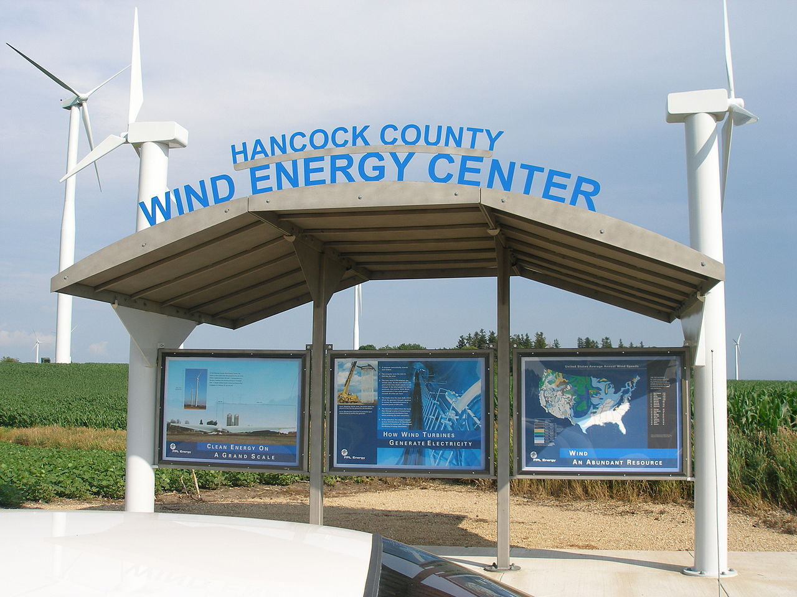

Wind Energy in Iowa
- Wind turbines covert kinetic energy, produced from the wind moving their blades, into electrical energy
- The turbines in Iowa are around 26 stories tall
- Each turbine weights around 57 tons, with each of it's three blades around 8,000 pounds
Here is a quote from Wikipedia on Wind Energy in Iowa:
Making up over 55% of the state's generated electricity in 2021, wind power is the largest source of electricity generation in Iowa.
The state had hopes to achieve only 40% by 2020, but we reached that by late 2019 and sailed past that goal by 2020. 2 years ago, Iowa have over 5,500 functioning wind turbines throughout the state, which has lead to it's great sucess.
Hancock county has a large precentage of the state's turbines.
As you can see, Iowa is the leading state when it comes to wind power.